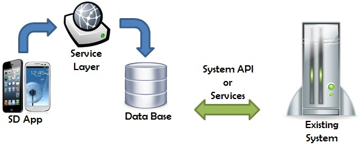

We have a pre-existing web application and need to develop a module for Smart Devices. The KB for the Smart Device application will create its own database, which will be synchronized with the pre-existing system database through services or APIs.

When the Smart Device application is run, it only has access to its own database. It doesn't interact with the pre-existing system database. We developers must implement this communication by developing services or synchronization programs (which is easier if the developers of the pre-existing system provide us with an API). The options for these synchronization programs are varied:
- PULL
Synchronization services or programs are run from the left (SD application DB) to the right (pre-existing system DB). This doesn’t mean that the synchronization process is run from the Smart Device application itself, because different options exist:
- The synchronization programs can be hosted in the same place as the services of the Smart Device application (web server).
- Synchronization programs are hosted and run in an independent manner, for example through batch processes. They can be hosted anywhere. In order to work, they only need to have access to both databases.
- Synchronization programs may be required when running a certain feature of the SD application. In this case, the synchronization service would be called from the SD application.
- PUSH
The pre-existing system replicates the data towards the SD application. Synchronization programs or services are run in the opposite direction: from the right (pre-existing system DB) to the left (SD system DB).
For example, when new data is entered or updated in the pre-existing system database, a replication service is called for this data to be added to the SD application database as well. This implies developing code in the pre-existing system, so this option is not always possible.
All communication techniques between systems, including PULL and PUSH, are used for communication both ways and some of them can be combined in the same system. That is to say: one technique will be used for some data and a different technique will be used for other data depending on its importance, volume, the frequency with which it is updated, and so on. In addition, they can be executed automatically (by demons that run the synchronization process at certain intervals) or manually (on demand) by a user.
- Flexibility to design the SD application: we can have a DB with the necessary information for this application. Conflicts with the pre-existing system data are solved in the synchronization programs.
- SD application is run regardless of the pre-existing system availability.
- Duplicated data: if there is a large volume of data and most of it must be synchronized, this solution becomes unfeasible.
- The pre-existing system may have to be changed or extended to implement a synchronization service: this may not always be an option.
|